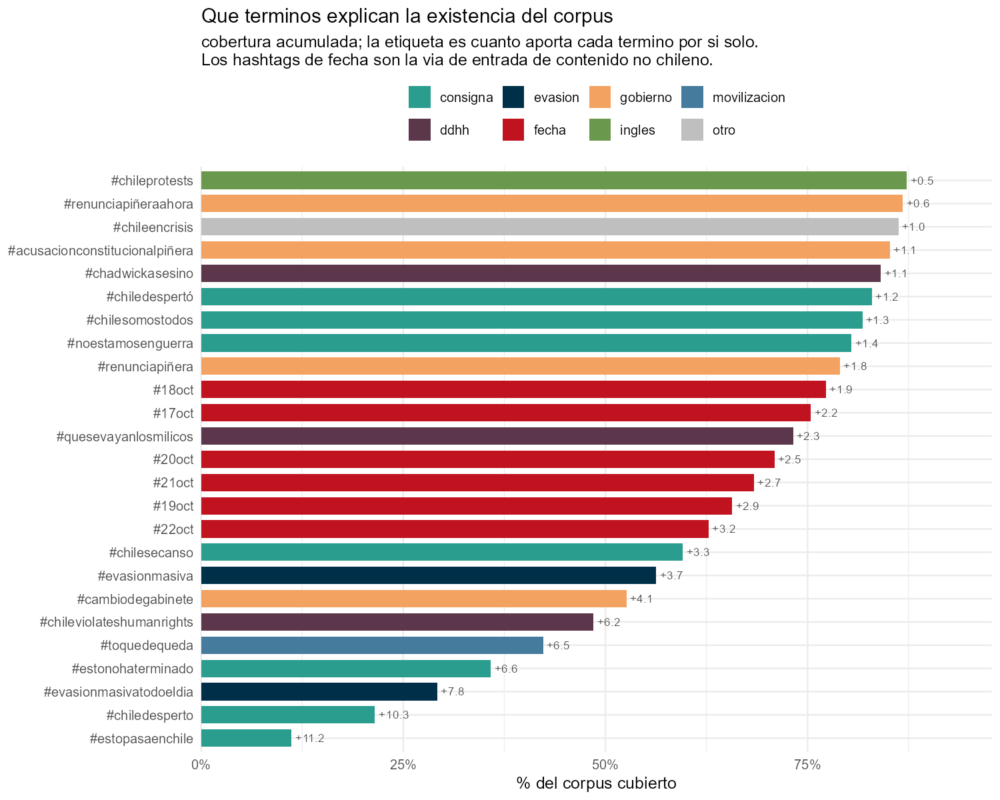

La consulta estaba perdida y se reconstruyó desde los propios datos
El corpus llegó como un único archivo con las 90 columnas estándar de rtweet y ninguna que dijera por qué consulta entró cada tweet. Sin eso no se puede interpretar nada: un corpus recolectado por términos contiene lo que esos términos atrajeron, incluido lo que no tiene que ver con el tema.
Reconstruirla desde los datos
Si un corpus se arma siguiendo una lista de términos, casi todo tweet tiene que contener al menos uno. Se extraen los hashtags de los 6,1 millones de textos y se resuelve una cobertura glotona: en cada paso, el hashtag que cubre más tweets todavía no cubiertos.

No hay un corte limpio entre “término de consulta” y “vocabulario emergente”: la ganancia marginal cae de forma gradual, de 11,2% el primero a 0,1% el número 40. Ese gradiente ya es un hallazgo — se rastreó una lista larga, no dos o tres hashtags. Cuarenta términos cubren el 91,5% del corpus.
La validación
Después aparecieron los archivos originales de recolección: 53 archivos, uno por consulta, con fechas del 17 al 29 de octubre de 2019, y un script de consolidación que asignaba una columna consulta a cada uno. Eso permitió contrastar la reconstrucción contra la lista real.
ver código
tabla(val[, .(`#`= paso, Término = termino, `Tweets que aporta`= tweets_nuevos,`Cobertura acum.`=pc(pct_acumulado, 1), Familia = familia,`¿Consulta real?`=fifelse(en_originales, "sí", "no"))],align ="rlrrll")
Warning in prettyNum(.Internal(format(x, trim, digits, nsmall, width, 3L, :
'big.mark' y 'decimal.mark' son ambos '.', lo cual puede ser confuso
Warning in prettyNum(.Internal(format(x, trim, digits, nsmall, width, 3L, :
'big.mark' y 'decimal.mark' son ambos '.', lo cual puede ser confuso
Tabla 1: Los 40 términos reconstruidos a ciegas, contra la lista real de consultas.
#
Término
Tweets que aporta
Cobertura acum.
Familia
¿Consulta real?
1
#estopasaenchile
682.397
11,2%
consigna
sí
2
#chiledesperto
629.628
21,4%
consigna
sí
3
#evasionmasivatodoeldia
477.114
29,2%
evasion
sí
4
#estonohaterminado
403.954
35,8%
consigna
sí
5
#toquedequeda
396.336
42,3%
movilizacion
sí
6
#chileviolateshumanrights
380.601
48,5%
ddhh
sí
7
#cambiodegabinete
249.360
52,6%
gobierno
sí
8
#evasionmasiva
226.098
56,3%
evasion
sí
9
#chilesecanso
200.988
59,6%
consigna
sí
10
#22oct
196.509
62,8%
fecha
sí
11
#19oct
178.014
65,7%
fecha
sí
12
#21oct
164.416
68,4%
fecha
sí
13
#20oct
153.511
70,9%
fecha
sí
14
#quesevayanlosmilicos
141.493
73,2%
ddhh
no
15
#17oct
135.216
75,4%
fecha
sí
16
#18oct
113.780
77,3%
fecha
sí
17
#renunciapiñera
106.848
79,0%
gobierno
sí
18
#noestamosenguerra
87.413
80,4%
consigna
sí
19
#chilesomostodos
82.300
81,8%
consigna
sí
20
#chiledespertó
71.062
83,0%
consigna
sí
21
#chadwickasesino
68.369
84,1%
ddhh
no
22
#acusacionconstitucionalpiñera
68.043
85,2%
gobierno
sí
23
#chileencrisis
64.470
86,2%
otro
sí
24
#renunciapiñeraahora
34.253
86,8%
gobierno
sí
25
#chileprotests
30.444
87,3%
ingles
sí
26
#paronacional
27.963
87,8%
movilizacion
sí
27
#chileresiste
26.923
88,2%
consigna
sí
28
#marchadelmillon
26.769
88,6%
movilizacion
sí
29
#evasiónmasiva
26.387
89,1%
evasion
sí
30
#renunciapiñeraculiao
24.651
89,5%
gobierno
sí
31
#evasionmasivatodoeldía
19.271
89,8%
evasion
sí
32
#chalecosamarillos
18.720
90,1%
movilizacion
sí
33
#chileprotesta
17.366
90,4%
ingles
sí
34
#chilesecansó
12.384
90,6%
consigna
sí
35
#congreso
11.966
90,8%
gobierno
sí
36
#pazparachile
11.054
91,0%
consigna
sí
37
#apagalatele
9.920
91,1%
movilizacion
sí
38
#chile
9.374
91,3%
otro
no
39
#acusaciónconstitucionalpiñera
9.326
91,4%
gobierno
sí
40
#marchadelmillón
6.958
91,5%
movilizacion
sí
37 de 40 (92%) son consulta original, y explican el 87,9% del corpus.
Los tres que no coinciden son casi aciertos. La reconstrucción encontró #QueSeVayanLosMilicos y #ChadwickAsesino; las consultas fueron #VayanseMilicos y la palabra chadwick. En esos casos la reconstrucción describe mejor el contenido del corpus que la consulta que lo generó.
El límite del método, medido
De las 49 consultas originales, 18 no se recuperan. Son sobre todo las que no eran hashtags sino palabras sueltas: INDH, congreso, chadwick, Saqueos, Disparos institucionales, NO HAY DEBASTECIMIENTO. Una reconstrucción basada en hashtags es ciega a las consultas por palabra clave.
Tabla 2: Las 49 consultas con que se recolectó el corpus.
Consulta
Fuente
#17oct
columna consulta
#18Oct
columna consulta
#19Oct
columna consulta
#20Oct
columna consulta
#21Oct
columna consulta
#22Oct
columna consulta
#AcusaciónConstitucionalPiñera
columna consulta
#Apagalatele
columna consulta
#CambiodeGabinete
columna consulta
#ChalecosAmarillos
columna consulta
#ChileDesperto
columna consulta
#ChileProtesta
columna consulta
#ChileProtests
columna consulta
#ChileResiste
columna consulta
#ChileSeCanso
columna consulta
#ChileSomosTodos
columna consulta
#ChileViolatesHumanRights
columna consulta
#EstoNoHaTerminado
columna consulta
#EstoPasaEnChile
columna consulta
#EvasionMasiva
columna consulta
#EvasionMasivaTodoElDia
columna consulta
#HabraConsecuencias
columna consulta
#LaMoneda
columna consulta
#MarchaDelMillon
columna consulta
#NosQuierenRobarHastaLaMarcha
columna consulta
#ParoNacional
columna consulta
#RenunciaPiñera
columna consulta
#RenunciaPiñeraAhora
columna consulta
#RenunciaPiñeraCuliao
columna consulta
#RenunciaPiñeractm
columna consulta
#VayanseMilicos
columna consulta
#YoApoyoAlPresidente
columna consulta
#autogolpe
columna consulta
#noestamosenguerra
columna consulta
#pazParaChile
columna consulta
#toquedequeda
columna consulta
ChileEnCrisis
columna consulta
Disparos institucionales
columna consulta
INDH
columna consulta
NO HAY DEBASTECIMIENTO
columna consulta
Saqueos
columna consulta
chadwick
columna consulta
congreso
columna consulta
df_saqueos_diparos
nombre de archivo
df_tweets
nombre de archivo
metro1
nombre de archivo
metro3
nombre de archivo
pinera_renuncia
nombre de archivo
veinte1
nombre de archivo
Por qué importa para quien reutilice estos datos
Seis de esas consultas son hashtags de fecha (#17oct a #22Oct) y explican 941.446 tweets, el 15,4% del corpus. Son términos que cualquiera en el mundo usa ese día. Por ahí entró contenido que no tiene nada que ver con Chile — y es medible.